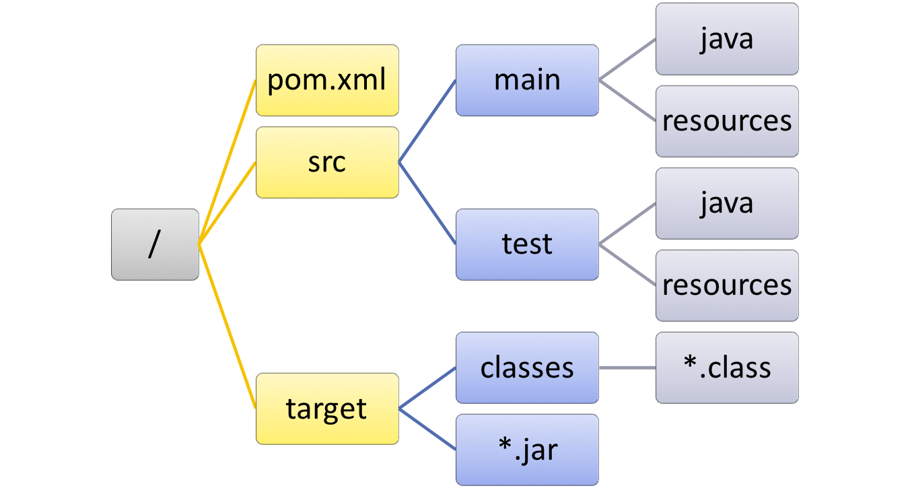
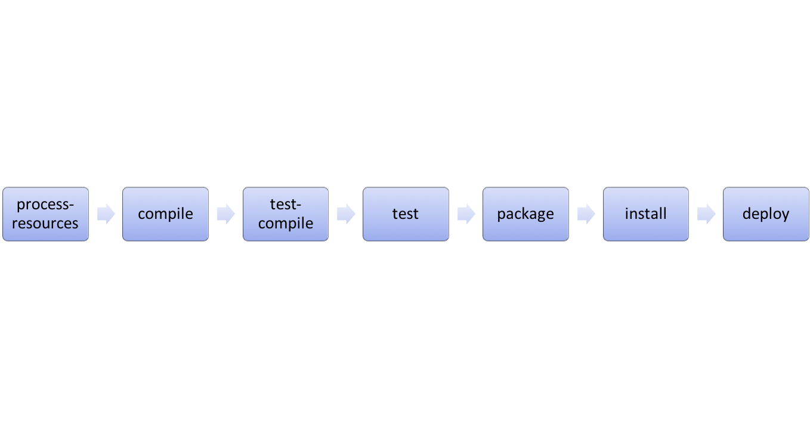
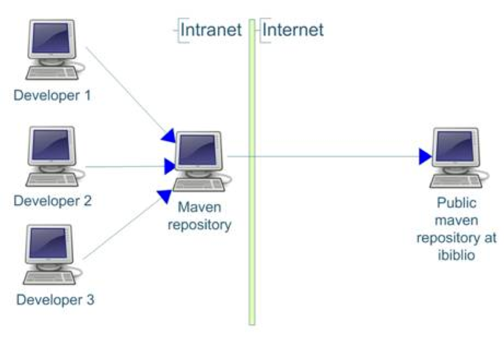

<?xml version="1.0" encoding="UTF-8"?>
<project xmlns="http://maven.apache.org/POM/4.0.0"
xmlns:xsi="http://www.w3.org/2001/XMLSchema-instance"
xsi:schemaLocation="http://maven.apache.org/POM/4.0.0 http://maven.apache.org/xsd/maven-4.0.0.xsd">
<modelVersion>4.0.0</modelVersion>
<groupId>ch.hesge.frankel.ci</groupId>
<artifactId>continuous-integration</artifactId>
<version>0.0.1-SNAPSHOT</version>
</project>Build
Description
Processus pour créer un livrable à partir de sources
Exigences
Reproductible
Automatisé
(Portable)
Historique
Make
Ant
Maven
Gradle
etc.
Make
Lié aux OS *Nix
Non portable
Apache Ant
"Another Neat Tool"
Premier outil de build cross-OS pour Java
Basé sur un fichier de définition
build.xmlNotion de task
Configuration des dépendances entre les tasks
Gradle
Pour Java (JVM ou Android)
Script Groovy (ou Kotlin)
Notion de task
Notion de phases
Déclaration des librairies
Dépendances entre les phases
Possibilité de définir des tasks dans le fichier de build
Autres outils
| Outil | Description |
|---|---|
Ivy | Ajoute la gestion des dépendances à Ant |
sbt | Dédié à Scala |
Leiningen | Dédié à Closure |
Rake | Dédié à Ruby |
Pourquoi ?
Outil de build très répandu
Précurseur de nombreuses bonnes pratiques
Strict
Apports Maven
"Convention Over Configuration"
Coordonnées d’artéfact
Cycle de vie
Architecture en plugins
Dépendances déclaratives (et transitives)
Convention de structure

Project Object Model
Fichier de configuration d’un projet Maven
pom.xmlà la racine
Coordonnées
Identifie de manière unique un artéfact
groupIdartifactIdversion(
packaging)
Packaging
Par défaut :
jarStandard :
warejb-jarpometc.
Possibilité d’en ajouter via des extensions
Un POM basique
Properties
Balise
<properties>à la racinePaires clé/valeur
Résolution de n’importe quelle clé via
${key}Propriétés par défaut :
p.e.
${project.artifactId}
Rendent la configuration DRY
<?xml version="1.0" encoding="UTF-8"?>
<project ...>
...
<properties>
<key>value</key>
</properties>
<name>Mon projet ${key}</name>
</project>Cycles de vie
Ensemble de phases prédéfinies
Chaque phase n’est exécutée que si la phase précédente l’a été
Cycles de vie disponibles
cleansitedefault
Condensé des phases disponibles

Dépendance des étapes
Une étape n dépend de l’étape n-1
p.e.
testdépend decompile
Lancement d’une phase
mvn <phase>mvn testmvn installetc.
Plugins Maven
Architecture basée sur les plugins
Fonctionnalité qui ajoute/modifie le processus de build
Au sens large
Qu’est-ce qu’un plugin ?
Artéfact Maven
JAR
Structure spécifique
Configurable dans le POM
Notion de goal
Point(s) d’entrée dans le plugin
Architecture plugins/dépendances
Tous les plugins/dépendances sont en-ligne
Maven les télécharge
Il faut configurer le proxy
Lancement d’un goal
mvn [<groupId>:]<artifactId>:<goal>mvn compiler:compilemvn surefire:testmvn org.pitest:pitest-maven:mutationCoverage
Liaison implicite
Par défaut, certains goals sont liés à une étape
Dépend du packaging configuré dans le POM
Liaisons pour JAR

Configuration de plugin
<project ...>
<build>
<plugins>
<plugin>
<artifactId>maven-compiler-plugin</artifactId>
<version>3.2</version>
<configuration>
<source>1.8</source>
<target>1.8</target>
</configuration>
</plugin>
</plugins>
</build>
</project>Le
groupIdpeut être omis si celui-ci estorg.apache.maven.pluginsToujours spécifier la version
Liaison explicite
Il est possible de lier un nouveau goal à une étape
Pour ajouter de nouvelles fonctionnalités au build
<project ...>
<build>
<plugins>
<plugin>
<groupId>org.pitest</groupId>
<artifactId>pitest-maven</artifactId>
<version>1.1.6</version>
<executions>
<execution>
<goals>
<goal>mutationCoverage</goal>
</goals>
<phase>test</phase>
</execution>
</executions>
</plugin>
</plugins>
</build>
</project>Plugins utiles
Source
Javadoc
Assembly
Uberjar
Gestion des dépendances
L’API Java n’est pas suffisante
Besoin de librairies annexes :
p.e. pour les tests
Alternatives
Répertoire partagé
Sur le réseau local
VCS
Risque de modifications
Référentiel d’artéfacts
Référentiels d’artéfacts
Dans le cloud :
repo1 : dépôt par défaut
Bintray : à configurer
Au sein de l’entreprise :
Sonatype Nexus
JFrog Artifactory
Téléchargement des plugins/dépendances
Vérification dans le dépôt local
~/.m2/repository
Si non, téléchargement depuis le dépôt distant
repo1
Autres dépôts paramétrés
Dépendances transitives
SI le project dépend de A
ET A dépend de B
ALORS le projet dépend de B
ET B sera téléchargé
Dépôt d’entreprise

Phase de déploiement
packageCrée l’artéfact p.e. JAR
installStocke l’artéfact dans le dépôt local
deployUploade l’artéfact dans le dépôt distant
Configuration du déploiement
Dépôt distant commun
Dépôt d’entreprise
Configuration du déploiement
Coordonnées de l’artéfact
Section
<distributionManagement>du POM
Authentification
settings.xmldans le$HOME
Configuration des dépendances
Déclaration des coordonnées de la librairie
<project ...>
<dependencies>
<dependency>
<groupId>com.thoughtworks.xstream</groupId>
<artifactId>xstream</artifactId>
<version>1.4.8</version>
</dependency>
</dependencies>
</project>Portée des dépendances
Les dépendances n’ont pas toutes le même usage
Les librairies de test n’ont pas besoin d’être sur le classpath du package final
Portée des dépendances
compilePar défaut
testruntimeprovided
<project ...>
<dependencies>
<dependency>
<groupId>org.testng</groupId>
<artifactId>testng</artifactId>
<version>6.8.8</version>
<scope>test</scope>
</dependency>
</dependencies>
</project>Gestion des versions
- Instantané
x.y.z-SNAPSHOT- Release
x.y.z
Gestion des versions
- Snapshot
En cours de développement
n versions possibles
Maven utilise la dernière version
- Release
Version unique
Principe de fonctionnement
Travail sur une version
-SNAPSHOTLe
maven-release-plugineffectue la releasemvn release:preparemvn release:perform
Goal release:prepare
Vérifie qu’il n’y a pas de fichiers non committés dans les sources
Vérifie qu’il n’y a pas de dépendances
SNAPSHOTChange la version du POM de
x–SNAPSHOTà une nouvelle versionModifie les informations de VCS du POM pour référencer le tag final
Exécute les tests
Commit le POM modifié
Crée un tag dans le VCS
Modifie la version du POM à
y–SNAPSHOTCommit à nouveau le POM modifié
Goal release:perform
Checkout des sources
Exécute le goal Maven par défaut pour la release
mvn deploy
Filtrage
Lire des informations du POM pour l’écrire dans des ressources générées
Configuration du filtrage
<build>
<resources>
<resource>
<directory>src/main/resources</directory>
<filtering>true</filtering>
</resource>
</resources>
</build>app.properties
version=${project.version}Profils Maven
Un profil est section du POM qui peut être activée (ou non)
L’activation se fait via l’option
–Pde la ligne de commande
<profiles>
<profile>
<id>production</id>
<build>
<plugins>
<plugin>
<artifactId>maven-compiler-plugin</artifactId>
<version>3.3</version>
<configuration>
<debug>false</debug>
<optimize>true</optimize>
</configuration>
</plugin>
</plugins>
</build>
</profile>
</profiles>